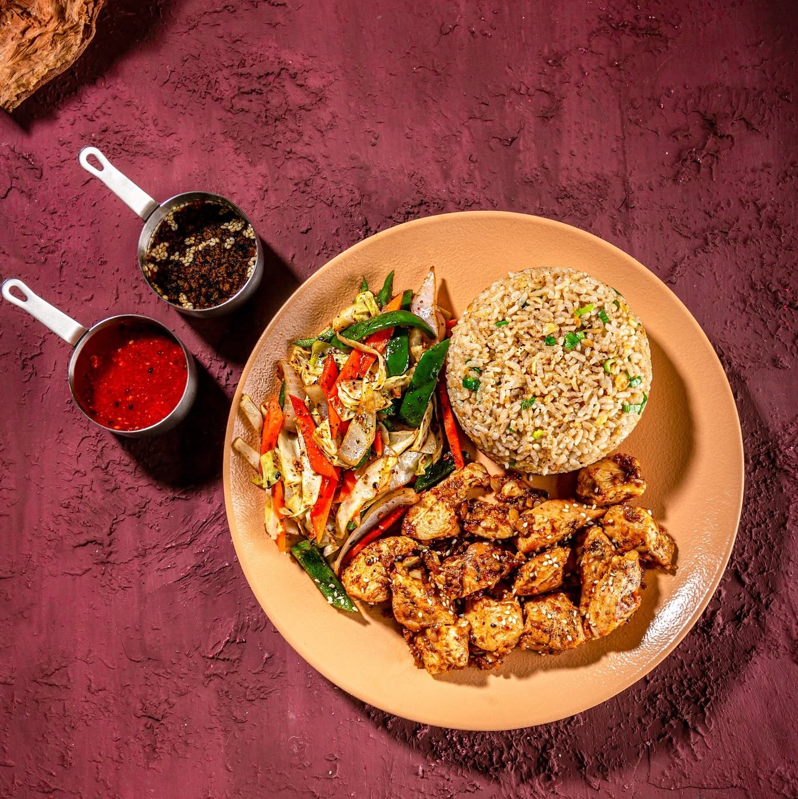
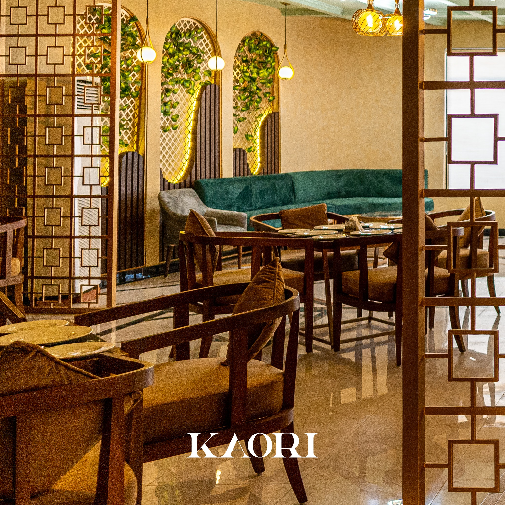

PAN-ASIAN ELEGANCE, REDEFINED
Where centuries-old traditions meet modern mastery. Kaori brings Sialkot its own refined Pan-Asian dining experience — crafted with fire, finesse, and authenticity.

★★★★★
Panasian Mastery
Elevated flavors, curated perfectly
★★★★★
Modern Aesthetics
Mouth watering flavours with modern aethetics
★★★★★
Ambience
Designed for calm, slow dining

OUR STORY
Founded with a passion for culinary excellence, Kaori’s journey began in the heart of Sialkot. Over years, it evolved into a haven for pan-asian enthusiasts, celebrated for its artful mastery and devotion.